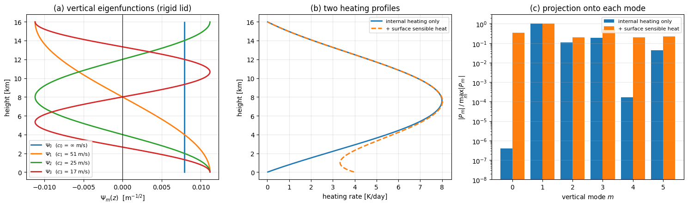

垂直模態分解 Normal Mode Decomposition#
把一個三維大氣場，沿垂直方向拆解到一組「由大氣自己的層結與上下邊界條件所決定」的正交基底上。
文獻裡常常會冒出這樣一條式子：
第一次看到它，通常會有三個問號：\(\Psi_0\) 到底是誰決定的？為什麼被投影的是 \(\partial Q/\partial z\) 而不是 \(Q\) 本身？還有，這條式子真的能從 Navier–Stokes 推出來嗎？這篇筆記把這三件事講清楚。
一、先把三個層次分開#
垂直模態分解常被當成一整團東西記憶，但它其實是三個完全不同層次的操作：
操作 |
在做什麼 |
由誰決定 |
|---|---|---|
垂直本徵模態 \(\Psi_m(z)\) |
找出「這個大氣容許哪些垂直形狀」 |
線性化方程 \(+\) 基本態 \(N^2(z)\) \(+\) 上下邊界條件 |
投影 \(\displaystyle\int (\cdot)\,\Psi_m\,w\,dz\) |
量「某個場有多少落在這個形狀上」 |
純線性代數（正交性） |
被投影的對象 \(-\dfrac{\partial Q}{\partial z}\) |
取決於控制方程式把什麼擺在強迫項 |
你從哪一組方程式出發 |
這也直接回答了「請你從 Navier–Stokes 推出這條式子」這個問題：光憑這一行是推不出來的。至少還缺三個資訊 —— \(Q\) 在原文中是什麼、\(\Psi_0\) 是哪一個本徵值問題的解、積分範圍與邊界條件是什麼。Navier–Stokes 裡面根本沒有 \(\Psi_0\)：它是「控制方程式 \(+\) 基本態 \(+\) 邊界條件」三者一起造出來的產物，而不是流體方程式本身自帶的東西。
二、公式是怎麼來的#
整條理論鏈長這樣：
Navier–Stokes
│ 尺度分析 H/L ≪ 1，垂直加速度不是主導平衡
▼
Hydrostatic Primitive Equations
│ Boussinesq 近似 + 對靜止基本態線性化
▼
線性化 Boussinesq 方程組
│ 用靜力平衡消去浮力 b、用熱力學方程式把 w 診斷掉
▼
D − ∂ₜ[ ∂_z( N⁻² ∂_z Φ ) ] = − ∂Q/∂z
│ 分離變數：Φ = Σ Φ̂ₘ(x,y,t) Ψₘ(z)
▼
垂直結構方程式（Sturm–Liouville 本徵值問題）
│ 本徵函數正交
▼
模態投影
逐步、每一個等號都可追溯的完整推導，依屬性拆成兩份獨立檔案：
數學骨架（正交性、展開係數，與大氣無關）：Sturm–Liouville Orthogonality
大氣部分（垂直結構方程式、模態投影、external mode 的性質）：Vertical Structure Equation
為什麼強迫項長成 \(-\partial Q/\partial z\)#
這是全篇最容易被誤解的一步。關鍵在 Boussinesq 的連續方程式：
加熱本身做的事是製造浮力、驅動垂直速度 \(w\)。但水平方向的波動感受不到 \(w\)，只感受得到 \(\partial w/\partial z\) —— 是垂直伸縮把訊號交給水平輻散的。而靜力平衡把浮力鎖死在 \(\Phi\) 上之後，熱力學方程式就從「\(b\) 的預報式」變成「\(w\) 的診斷式」：
把它代回連續方程式，\(\partial/\partial z\) 就落到了加熱項頭上。所以：
強迫項之所以是 \(-\partial Q/\partial z\)，不是因為誰規定的，而是因為「加熱 → 垂直速度 → 垂直伸縮 → 水平輻散」這條因果鏈上，多做了一次 \(\partial/\partial z\)。
一個推論：垂直方向均勻的加熱（\(\partial Q/\partial z = 0\)），不管多強，都激發不出任何水平運動。
另外要留意，這裡的 \(Q\) 已經不是原始加熱率，而是被層結縮放過的 \(Q \equiv Q_b/N^2\)。看到 \(\int -\partial_z Q\,\Psi_0\,dz\) 時，先確認手上的 \(Q\) 是哪一個。
三、\(\Psi_0\) 為什麼叫 external mode#
垂直結構方程式是一個 Sturm–Liouville 問題：
分離常數 \(c_m\) 就是該模態的重力波相速，對應的等效深度為 \(h_m = c_m^2/g\)。也就是說，每一個垂直模態都自成一個「淺水世界」，只是水深不同 —— 這正是熱帶波動理論（Kelvin 波、Rossby 波、混合 Rossby–重力波）可以用淺水方程式來做的原因。
\(m = 0\)：external mode（外部模態）。在剛蓋邊界下 \(\Psi_0\) 是嚴格的常數，\(1/c_0^2 = 0\)，等效深度 \(h_0 \to \infty\)。整層大氣同相位地動，也就是「正壓（barotropic）」。
\(m \geq 1\)：internal modes（內部模態）。\(\Psi_m\) 隨高度變號，流場上下反轉，也就是「斜壓（baroclinic）」。
命名的由來要小心。常見說法是「\(n = 0\) 沒有節點所以叫 external」，但更貼近本質的講法是看恢復力：external mode 的恢復力來自 \(g\) 與流體的外部邊界，若上邊界是自由表面，\(c_0 \sim \sqrt{gH} \approx 280\ \text{m}\cdot\text{s}^{-1}\)（\(H\) 取標高約 \(8\ \text{km}\)）；換成剛蓋，等於把等效深度推到無限大，\(c_0 \to \infty\) 就是這個極限。internal mode 則由內部層結 \(N^2\) 提供恢復力，\(c_m \sim N H/(m\pi)\)，量級只有幾十 \(\text{m}\cdot\text{s}^{-1}\)。節點數與 \(m\) 的對應關係、以及 \(m = 0\) 到底是不是 external，都取決於你採用的本徵值問題與邊界條件，不能一概而論。
四、核心結論：內部加熱幾乎打不動正壓模態#
把 external-mode projection 做一次分部積分：
因為 \(\Psi_0\) 是常數，\(d\Psi_0/dz = 0\)，右邊第二項整個消失，只剩邊界項：
於是只要加熱在上下邊界歸零，這個投影嚴格是零：
深對流不管多猛，投影到正壓模態上的量都是零。
物理上的意思是：熱帶深對流之所以能影響中高緯，靠的不是直接激發正壓波列，而是先把能量打進斜壓模態（\(m = 1, 2, \cdots\)），再透過背景風切或非線性過程轉換過去。這也解釋了為什麼熱帶對流的直接響應是高度斜壓的（低層輻合、高層輻散），也就是華克環流的結構。
五、數值驗證#
用常數 \(N = 10^{-2}\ \text{s}^{-1}\)、厚度 \(16\ \text{km}\) 的剛蓋大氣，直接把垂直結構方程式離散成矩陣本徵值問題解出來，再把兩種加熱剖面投影上去。資料每次執行時即時生成，沒有任何檔案被存下來。
import numpy as np
import matplotlib.pyplot as plt
G, THETA0 = 9.81, 300.0 # 重力加速度 [m/s^2]、參考位溫 [K]
N2 = 1.0e-4 # 浮力頻率平方 N^2 [s^-2]
ZT = 16000.0 # 剛蓋高度 [m]
def vertical_modes(n_mode=6, nz=400, zt=ZT, N2=N2):
"""數值解垂直結構方程式 d/dz[(1/N^2) dPsi/dz] = -(1/c^2) Psi，剛蓋(Neumann)邊界。"""
dz = zt / nz
z = (np.arange(nz) + 0.5) * dz # cell-centered 網格
A = np.zeros((nz, nz)) # A = -d/dz[(1/N^2) d/dz]
for i in range(nz):
if i > 0:
A[i, i - 1] = -1.0
A[i, i] += 1.0
if i < nz - 1:
A[i, i + 1] = -1.0
A[i, i] += 1.0
A /= (N2 * dz ** 2)
lam, vec = np.linalg.eigh(A) # 對稱矩陣 -> 本徵值必為實數
lam, vec = lam[:n_mode], vec[:, :n_mode]
vec /= np.sqrt((vec ** 2).sum(0) * dz) # 正規化：int Psi^2 dz = 1
for m in range(n_mode): # 固定正負號，方便比對
ref = vec[:, m].mean() if m == 0 else vec[0, m]
if ref < 0:
vec[:, m] *= -1
c = np.where(lam > 1e-14, 1.0 / np.sqrt(np.abs(lam)), np.inf)
return z, dz, c, vec
def heating(z, deep_K_day=8.0, z_peak=6500.0, z_wid=12000.0,
surf_K_day=0.0, h_s=1500.0, zt=ZT):
"""深對流加熱（上下邊界嚴格歸零）＋ 可選的地表感熱（下邊界不歸零）。"""
shape = np.sin(np.pi * z / zt) * np.exp(-((z - z_peak) / z_wid) ** 2)
s = deep_K_day / 86400.0 * shape / shape.max() # 位溫變化率 [K/s]
s = s + surf_K_day / 86400.0 * np.exp(-z / h_s)
q_b = G / THETA0 * s # 浮力型式加熱 Q_b [m/s^3]
return q_b, q_b / N2 # 層結縮放後的 Q [m/s]
def projection(dz, Q, modes):
"""模態投影 P_m = int (-dQ/dz) Psi_m dz。"""
return (-np.gradient(Q, dz)) @ modes * dz
# ===== 主程式執行區 =====
z, dz, c, PSI = vertical_modes()
print("數值解 c_m [m/s] :", np.array2string(c, precision=1))
print("解析解 N*H/(m*pi):", np.array2string(
np.array([np.inf] + [np.sqrt(N2) * ZT / (m * np.pi) for m in range(1, 6)]), precision=1))
print("Psi_0 的起伏 / 平均值 = %.1e -> 數值上確實是常數" %
((PSI[:, 0].max() - PSI[:, 0].min()) / PSI[:, 0].mean()))
qb_int, Q_int = heating(z, surf_K_day=0.0) # 只有內部加熱
qb_sfc, Q_sfc = heating(z, surf_K_day=4.0) # 內部加熱 + 地表感熱
P_int, P_sfc = projection(dz, Q_int, PSI), projection(dz, Q_sfc, PSI)
print("\n純內部加熱 ：|P_0| / max|P_m| = %.1e" % (abs(P_int[0]) / np.abs(P_int).max()))
print("含地表加熱 ：|P_0| / max|P_m| = %.1e" % (abs(P_sfc[0]) / np.abs(P_sfc).max()))
print("邊界項理論值 -Psi_0*[Q(z_t)-Q(z_b)] = %.3e，數值投影 P_0 = %.3e"
% (PSI[0, 0] * Q_sfc[0], P_sfc[0]))
fig, ax = plt.subplots(1, 3, figsize=(15, 4.6))
for m in range(4):
lab = r"$\Psi_%d$ ($c_%d$ = %s m/s)" % (m, m, r"$\infty$" if np.isinf(c[m]) else "%.0f" % c[m])
ax[0].plot(PSI[:, m], z / 1000.0, lw=2, label=lab)
ax[0].axvline(0, color="k", lw=0.8)
ax[0].set_xlabel(r"$\Psi_m(z)$ [m$^{-1/2}$]"); ax[0].set_ylabel("height [km]")
ax[0].set_title("(a) vertical eigenfunctions (rigid lid)"); ax[0].legend(fontsize=8); ax[0].grid(alpha=.3)
ax[1].plot(qb_int * 86400 * THETA0 / G, z / 1000.0, lw=2, label="internal heating only")
ax[1].plot(qb_sfc * 86400 * THETA0 / G, z / 1000.0, lw=2, ls="--", label="+ surface sensible heat")
ax[1].set_xlabel("heating rate [K/day]"); ax[1].set_ylabel("height [km]")
ax[1].set_title("(b) two heating profiles"); ax[1].legend(fontsize=8); ax[1].grid(alpha=.3)
x = np.arange(len(c))
ax[2].bar(x - .2, np.abs(P_int) / np.abs(P_int).max(), .4, label="internal heating only")
ax[2].bar(x + .2, np.abs(P_sfc) / np.abs(P_sfc).max(), .4, label="+ surface sensible heat")
ax[2].set_yscale("log"); ax[2].set_ylim(1e-8, 3)
ax[2].set_xticks(x); ax[2].set_xlabel("vertical mode $m$")
ax[2].set_ylabel(r"$|P_m| \, / \, \max_m |P_m|$")
ax[2].set_title("(c) projection onto each mode"); ax[2].legend(fontsize=8); ax[2].grid(alpha=.3, axis="y")
plt.tight_layout()
plt.show()
數值解 c_m [m/s] : [ inf 50.9 25.5 17. 12.7 10.2]
解析解 N*H/(m*pi): [ inf 50.9 25.5 17. 12.7 10.2]
Psi_0 的起伏 / 平均值 = 2.8e-12 -> 數值上確實是常數
純內部加熱 ：|P_0| / max|P_m| = 4.0e-07
含地表加熱 ：|P_0| / max|P_m| = 3.5e-01
邊界項理論值 -Psi_0*[Q(z_t)-Q(z_b)] = 1.188e-04，數值投影 P_0 = 1.196e-04

三件事被驗證了：
(a) 數值解出來的相速 \(c_m\) 與解析解 \(N H/(m\pi)\) 完全吻合：\(c_0 = \infty\)、\(c_1 \approx 51\ \text{m}\cdot\text{s}^{-1}\)、\(c_2 \approx 25\ \text{m}\cdot\text{s}^{-1}\)。\(c_1\) 這個值正是熱帶 Kelvin 波觀測到的典型速度量級。而 \(\Psi_0\) 的起伏只有平均值的 \(10^{-12}\) 倍 —— 它在數值上就是一條直線。
(c) 藍色：純內部加熱時，\(m = 0\) 的投影比最大值小了六個數量級，剩下的只是離散化殘差。能量幾乎全部進了 \(m = 1\) 的第一斜壓模態。
(c) 橘色：一旦加上地表感熱（\(Q(z_b) \neq 0\)），\(m = 0\) 的投影立刻跳到與其他模態同一個量級，而且數值與邊界項 \(-\Psi_0\left(Q(z_t) - Q(z_b)\right)\) 的理論值相符（差不到 \(1\%\)，來自邊界處的一階單側差分）。
換句話說：正壓模態不是打不動，而是「內部」加熱打不動它 —— 要動它得從邊界下手。
六、三個容易犯的錯#
① 不知道 \(Q\) 是什麼，就開始講物理故事#
看到 \(\int -\partial_z Q\,\Psi_0\,dz\) 就斷定「\(Q\) 是加熱率、所以這是加熱激發波動的強迫」，是最常見的過度詮釋。\(Q\) 也可能是 geopotential、位溫、某個通量、甚至只是模式裡的一個 state variable。先問清楚 \(Q\) 的定義，再談物理。 本篇推導裡它是 \(Q_b/N^2\)，那是因為我們自己從那組方程式出發。
② 邊界項為零的條件是 \(Q\Psi_0 = 0\)，不是 \(Q = 0\)#
要讓 \(\big[Q\Psi_0\big]_{z_b}^{z_t} = 0\)，有三種可能：\(Q = 0\)、\(\Psi_0 = 0\)、或兩者乘積為零。直接宣稱「加熱率在邊界必須為零」是過強的條件。
反過來說，邊界項不為零也不代表投影失效。\(\int -\partial_z Q\,\Psi_0\,dz\) 本身永遠是一個合法的模態投影；邊界項只是告訴你：做完分部積分之後，不能把邊界貢獻丟掉。
③ external / internal 的命名依賴問題設定#
把「\(m = 0\)、無節點、正壓、external」四件事畫上等號很方便，但這只在特定的本徵值問題與邊界條件下成立。換成自由表面，\(\Psi_0\) 就不再是嚴格常數（只是「幾乎」常數），\(c_0\) 也從 \(\infty\) 掉回有限的 \(\sqrt{gH}\)；換成有背景風的基本態，垂直結構方程式甚至不再是這個乾淨的 Sturm–Liouville 形式，模態之間也不再正交。
參考資料#
[1]Sturm–Liouville Orthogonality（本知識庫） —— 正交性與展開係數的完整證明
[2]Vertical Structure Equation（本知識庫） —— 從線性化 Boussinesq 到模態投影的完整證明
[3]Boussinesq Approximation（本知識庫） —— 本篇線性化所依據的近似
[4]Hydrostatic Balance for Perturbations（本知識庫） —— \(\partial \Phi/\partial z = b\) 的來源
[5]Advanced Atmospheric Dynamics — 連續方程式與原始方程式 —— 推導鏈起點的控制方程式
[6]Advanced Atmospheric Dynamics — project2（赤道波色散關係） —— 拿到等效深度之後，每個模態的淺水系統怎麼解
[7] Gill, A. E. (1980), Some simple solutions for heat-induced tropical circulation, Quart. J. Roy. Meteor. Soc., 106, 447-462 —— 熱帶加熱響應的經典模態解
[8] Fulton, S. R. & Schubert, W. H. (1985), Vertical normal mode transforms: Theory and application, Mon. Wea. Rev., 113, 647-658 —— 垂直模態轉換的系統性整理